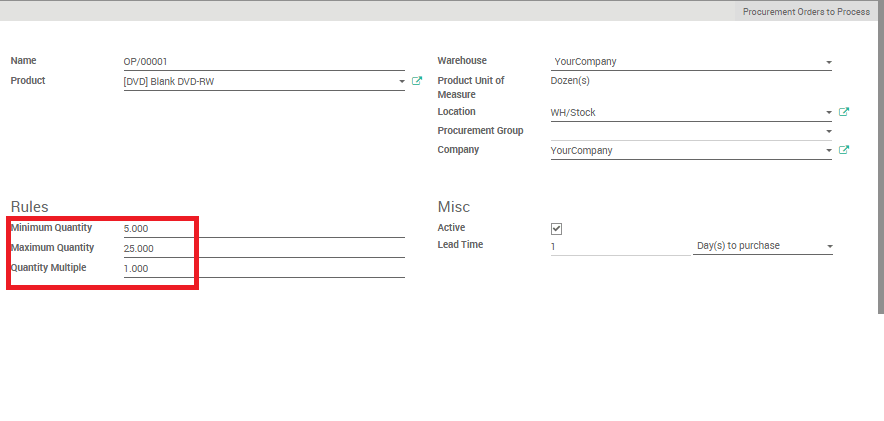
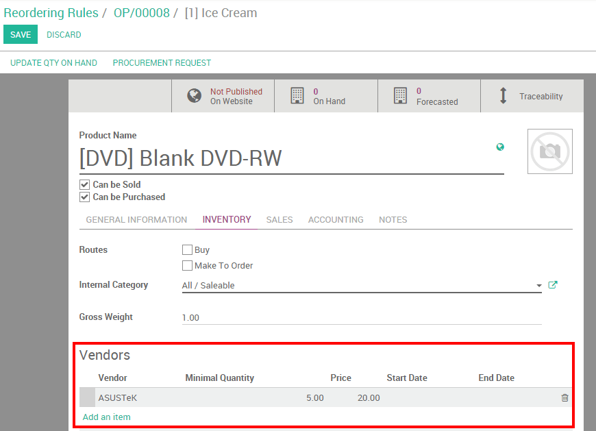
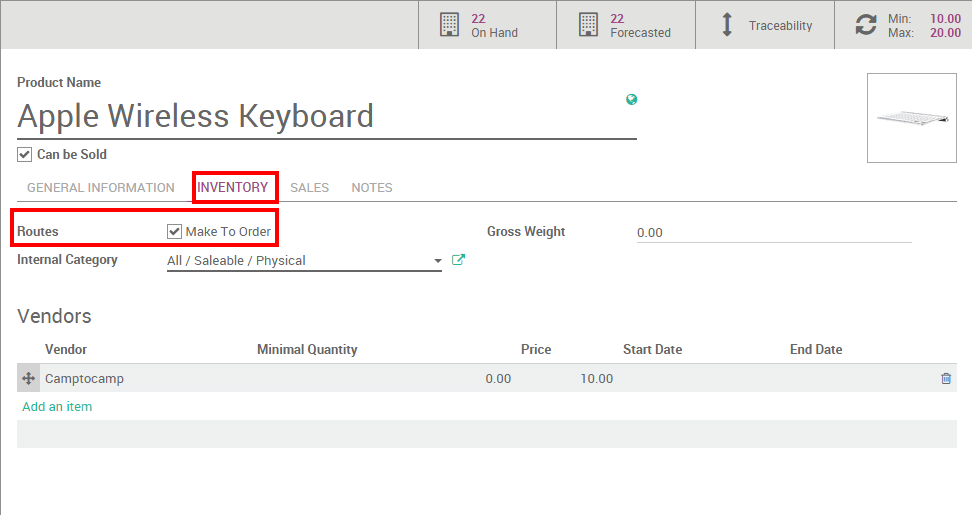

[UNKNOWN NODE problematic]最小库存规则**和**按订单补货**有着同样的结果但是却有不同的规则。依赖于生产以及发货的策略，我们可以选择使用它。
术语
最小库存规则
[UNKNOWN NODE problematic]最小库存 [UNKNOWN NODE problematic]规则能来确保在你的库存中总是有最少数量的产品用来满足生产或者满足客户的需求。当库存水平到达最低库存时，系统会自动生成一个达到最大数量的需求补货单。
按单补货
按订单生产**的功能会根据**销售订单**的产品数量触发一个该产品的**采购订单，系统**不会**检查当前的库存估值，也就是系统不考虑产品当前的在手数量会去触发一个采购订单。
配置
最小库存规则
最小库存规则的配置是在菜单项 的下拉菜单中。然后点击 创建 去设置给定产品最小和最大库存数值。
Procurement Group
Moves created through this orderpoint will be put in this procurement group. If none is given, the moves generated by procurement rules will be grouped into one big picking.
Minimum Quantity
When the virtual stock goes below the Min Quantity specified for this field, YuanCloud generates a procurement to bring the forecasted quantity to the Max Quantity.
Maximum Quantity
When the virtual stock goes below the Min Quantity, YuanCloud generates a procurement to bring the forecasted quantity to the Quantity specified as Max Quantity.
Quantity Multiple
The procurement quantity will be rounded up to this multiple. If it is 0, the exact quantity will be used.
Active
If the active field is set to False, it will allow you to hide the orderpoint without removing it.
Lead Time
Number of days after the orderpoint is triggered to receive the products or to order to the vendor
然后，在产品点击进入产品表单，在**存货子页面**选择一个供应商。
小技巧
不要忘了在产品表单中选择正确的产品类型。销售品不计入库存并且不进行库存估值
按单补货
按订单生产可以在产品表单配置:[UNKNOWN NODE title_reference] (或者其它模块下有的产品路径下)。
在产品表单信息的**存货**页面，点击**按单补货**
选择两个选项其中一个
两种选项的选择依赖于你的存货策略。如果你想有一点存货缓冲并总是在仓库中留有最少的存货数量，那么就可以使用最小库存规则。如果想只是在销售订单确认的状态下才去补充存货，那么就建议使用按照订单补货。